ATE solutions to 3D-IC test challenges: The readiness of Advantest's V93000
Scott Chesnut, Robert Smith, Florent Cros, Lakshmikanth Namburi Advantest
Paper-ID: 141586 May 2013
Abstract
Three dimensional integrated circuits (3D-IC) require that automatic test equipment develop capability to address the challenges brought on by these structures.
Such capability is found in test solutions which provide multiple clock domains, granular hardware porting per 3DIC layer, powerful test languages to control this hardware and collaborative software development environments.
Advantest’s introduction of clock domain per pin, multi-port, concurrent test, and protocol-aware software, MEMS probes, and SmarTest program manager address the test challenges of 3DIC in an effective effectively. They allow production solutions to be architected to the degree of granularity required by the development teams.
Keywords: Protocol-aware, Clock domain per pin, multi-port hardware, concurrent test framework, Protocol-aware, SmarTest program manager, PLL Keep Alive, 3DIC TSV, 25uM pitch, MEMS Probes, ATE, BIST, JTAG, Pico Ampere Meter, interposer, spatial translation, MEMS, planarity, probes, cantilever, beam.
Introduction
3D chips are multi-system entities whose test challenges dwarf those presented by yesterday’s System in a Package (SiP) and/or System On a Chip (SOC). Substantial infrastructure must be readied in order to position any Automatic Test Equipment (ATE) to succeed in a production test environment. A good approach to understanding what the real challenges are would be to eliminate those with already known solutions.
Past efforts to reduce test time, increase test coverage, and coordinate the software efforts of large groups of test engineers have solved 2D related production test problems. While these solutions had been developed for reasons other than 3DIC/TSV production test, we find they may lend themselves well to the task. Many of the perceived 3DIC/TSV test problems actually already have solutions. What follows is a description of how the existing features of Advantest’s V93000 might address many of these challenges.
Test Program Software Maintenance – SmarTest Program Manager.
Historically, a chip had one function. As more functions where added they became systems on a chip and then the migration to system in a package occurred. 3DIC systems in a stack add even greater complexity.
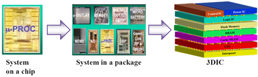
Figure 1: Evolution of chip density/complexity
Whether 3D stacks are assembled from Known Good Die (KGD) or Pretty Good Die (PGD) it can be assumed that "some" level of test will occur at both the chip level and then the stack level. Without assurance that chip layers are somewhat functional, a single layer’s defect can result with failing of the entire stack. Test costs become prohibitive as many good die are lost due to a single bad layer.
Testing die before and after stack assembly requires use of variations of the same test program. One program version is used for the single die, another for the assembled stack. This is because test at the chip level will target its subcomponents while test at the stack level will exercise mission mode system level performance.
It is likely that the same program be used for both activities with the difference being in how it perceives its current purpose. That is, a well architected test program can receive instructions from an operator or prober/handler and branch into chip or stack level test.
Whether testing PGD, KGD, on the chip or stack level, use of the same program to test both reduces the correlation burden between chip test and assembled stack test. Proper maintenance of these program variations will require tighter book keeping than in the past.
3D structures, being built from multiple separate chip layers have associated with them legions of test, product and design engineers responsible for performance of each layer. Large groups of people who, while in the past never had reason to collaborate, in the future will find it absolutely necessary. Since each layer represents man years of test development effort, the test programs of each engineering group will have to be integrated into a single large master test program whose purpose is test the entire stack or portions of it as it is built.
Collaborative test development software packages must enable graceful checking in and out of test program modules with a minimum of inter-group interaction and/or miscommunication. Ideally, it would also address multi-platform customer concerns because the intellectual property of a given test is expected to come from bench data, EDA tools, Verilog simulations and/or competing testers.
A method of handling this task is found in Advantest’s SmarTest Program Manager. While the product has many features which ease program generation, version control, translation, and test time reduction, it also allows effective collaboration between any number of engineers who independently debug, modify, and re-integrate changes into the master test flow. Already a highly mature product SmarTest Program Manager lends itself well to the task of 3DIC test software development, integration and maintenance.
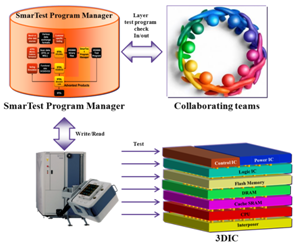
Figure 2: SmarTest Program Manager facilitates collaborative program development
Concurrent Test and Multiport
In the past, people focused on reducing test time by evaluating multiple subcomponents of a device in parallel. The more that could be run in parallel, the greater the test time savings. Older testers having single clock domains and primitive synchronization software had difficulty addressing this challenge.
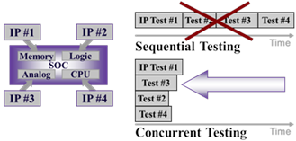
Figure 3: Concurrent test of IC cores by converting serial tests to parallel through the use of concurrent test framework and multiport configurable hardware.
The Advantest V93000 enables 128 separate clock domains for digital/analog/RF testing. Separate clocking makes possible the Multiport and Concurrent test features of the V93000 hardware and software. This highly granular resource control allows mission mode test to be accomplished. Improved test coverage occurs because each DUT core can interact autonomously and asynchronously with the tester if actually operating in the target application.
The Advantest V93000 enables 128 separate clock domains for digital/analog/RF testing. Separate clocking make possible the Multiport and Concurrent test features of the V93000 hardware and software. This highly granular resource control allows mission mode test to be accomplished. Improved test coverage occurs because each DUT core can interact autonomously and asynchronously with the tester as actually operating in the target application.
While this feature has been in use on 2D products for years, its usefulness becomes apparent during 3DIC stack assembly test. Assuming that access to the TSV pads are on the top of every layer to be assembled, and assuming that the probe technology used to make contact to them exists, we might see the bond/build up process as shown in the figures below.
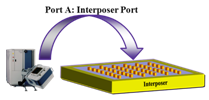
Figure 4: Step 1: Port A of the tester resource set is used to interrogate the first stack layer – the interposer
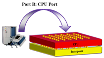
Figure 5: Step 2: Port B of the tester resource set is used to interrogate the second stack layer - the CPU
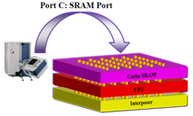
Figure 6: Step 3: Port C of the tester resource set is used to interrogate the second stack layer – the SRAM
During 3DIC assembly, the signal type and speed of the accessible TSVs of each layer will be different. The TSV signals exposed on the top of the interposer layer will differ from those exposed on the top of the CPU layer. Similarly, those of the CPU layer will be different than those of the SRAM layer, and so on. A single master test program can test separate layers as they are placed on the growing stack. This master test program will use each of the many configured ports, each architected to serve the needs of every layer. In this way as layers are bonded on the stack and as the profile of the accessible signal sets change, a new test program need not be loaded into the tester. Multiple separate programs will not be needed.
Clock Domain per Pin
Advantest’s Multiport allows the hardware assignment granularity required to test discrete 3DIC layers and cores within each layer. As mentioned previously, another such feature is clock domain per pin capability of Advantest’s PS1600 and PS9G digital pins. Such functionality allows each layer or layer sub function to operate in any of up to 128 total asynchronous clock domains, each supporting independent periods resolved to 3nS. This can be considered a requirement for future 3DIC designs because the integration of multiple IP cores on stack layers will require multiple clock frequencies/domains. Mission mode setup and operation becomes an issue as more layers of the stack are assembled because direct access to sunken layers will become obscured. The only way to operate the partial stack will be if the ATE can achieve this functionality. Hence ATE targeting 3DIC test needs to be a flexible multi clock domain instrument as well as one supporting Multiport.
As seen in Fig. 7, the Advantest test equipment can be configured to operate each individual layer at its required asynchronous clock rate. Stack layer clock rates will have to be provided whose frequencies are dissimilar to the point of only being fractionally related to those around them. Multiple free running clocks will have to be provided to different layers again at different rates. PCI express, PXI, SLIM bus, etc. protocols will be expected to run simultaneously on different parts of digital hardware while unrelated RF/mixed signal activities occur autonomously as well. Data bus rates of multiple layers can be expected to have unique timing requirements unto themselves.
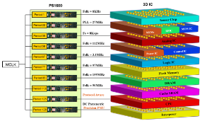
Figure 7: Multiple clock domains across ports and IP cores of a 3DIC chip stack
Protocol Engine per Pin
As the 3D chip is built and tested, bottom layers will have been designed to communicate with others which are not yet present. Again, this type of communication is expected to be done in mission mode. A tester will have to become the "surrogate stack" until future layers are assembled. It will be required that the ATE act to perform the virtual functions of the remaining un-built stack layers in order to facilitate the mission mode testing of the targeted layer as well as the layers underneath it. It becomes necessary to use protocol-aware to make the stack "think" it is talking with the rest of itself even though it’s yet not there. A tester implementing protocol-aware allows the tester to act as the remaining un-built portion of the stack.
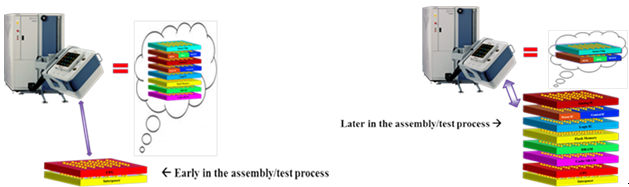
Figure 8: As stack layers are added, the tester must mimic the function of future, not yet present layers
But physical challenges occur as the stack layers are built up. These stem from the fact that the X-Y locations of a given signal set will change from layer to layer. That is, pads whose purpose was to send/receive PCIE signals at topological location A on layer 1 may be found at location F on layer 2. This is generally known as the "spatial translation" of a given signal set from layer to layer.
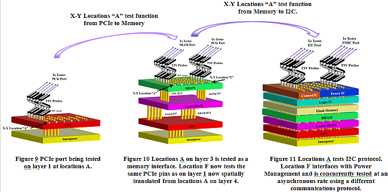
To compound the problem, on layer 2 the pads at location A may be required to perform I2C protocol not PCIE. Normally, to accommodate this would require a separate probe arrangement for each layer meaning a separate probe card for each layer and a separate way of handling the protocol change. Alternatively, since the V93000 port granularity allows for reassignment of digital pins from one port to another in a dynamic fashion, this exception is handled. Probe card pins which test I2C on one layer can be reconfigured as PCIE on another. This is because the V93000 supports the Protocol Engine per pin which means the same pin can test either protocols (or any other for that matter) on the same probe pin (same X-Y layer location) across all of the layers.
Unfortunately, if the type of spatial translation is occurring between layers and moves from digital to RF or mixed signals, this solution falls apart because the function of the tester resource changes entirely thus requiring reassignment of probe card wiring to a different tester resource or a local relay implementation. Possible solutions to this problem are:
- Develop a JEDEC (Joint Electronic Device Engineering Council) standard which enforces strict TSV signal type assignment rules. But this will require all layer vendors to observe defined conventions. As of the date of this writing, JEDEC has yet to develop a complete standard.
- Design every tester pin to accommodate every signal type: RF/Power/Mixed Signal/Digital. This is an impractical, expensive, and multi-man year solution to develop.
- Re-route probe cards for every layer. This requires multiple separate probe cards - one for every layer which would be expensive.
- Use interposers to perform the spatial translation. While this adds to the assembly burden, it is a flexible solution which could handle physical layout exceptions. But as such requires that all interposers be individually tested.
The most practical currently available solution to this problem would be to introduce interposers between layers to route signals of a given type to a region of the probe card where these tester resources have already been assigned. In this way, repositioning of the probe arrangement by way of another probe card is not required (eliminating the requirement for multiple probe cards and the time to change them).
Interposers
There has been recent focus on the use of interposers to perform the intra-layer spatial translation. This is so not only for the reasons specified above (to avoid spatial translation of digital to RF signals and to address mechanical pitch mismatches) but also because use of them relinquishes chip designers from the responsibility of routing signals to the TSV x/y locations required by the next/previous layers of the stack. While the JEDEC consortium outlines the standard JESD49A, which suggest conventions where by these designer might compromise their efforts it is not complete; a simpler solution may the use of interposers.
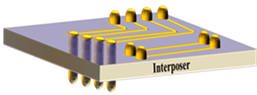
Figure 12: Simplified Interposer Concepts. Signals from bottom side being routed to a different location on the top. Same side signals being routed to different locations
The word "interposer" comes from the Latin, interponere, meaning 'to put up between'. In the context of 3DIC test an interposer will perform the spatial translation of signals coming from one layer’s X/Y positions to that of the next layer. The interposer will be "put in between" layers in order to route signals using conductive paths.
Interposers can be used to route signals of a given nature to probe card pins which are already assigned to that type of tester resource signal (RF/mixed signal/digital/power). This eliminates the requirement to swap probe cards during intra-layer production test of the stack.
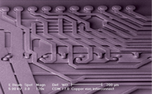
Figure 13: Actual Interposer Implementation. [1]
The number of TSVs found in future 3D devices is expected to be large - hundreds or thousands on top and bottom of each layer. The conductive traces on interposers will be comprised of very small geometries and tax the limits of mechanical fabrication tolerances. Because of this, a great number of the traces (if not all) are to be tested if for no other reason than to check process variations.
To test interposer trace connectivity in production will require more than just continuity. The current carrying capability of each trace is expected to be very low – too low for standard ATE parametric instrumentation to be able to resolve. While Time Domain Reflectometry (TDR) techniques can be used to validate/characterize line length, continuity, and possibly impedance, it cannot verify current carrying capability (conductance). The Advantest Pico-amp Measure Card, can do all of these. Line length is verified by resistivity per cubic millimeter and knowledge of ideal trace volumetric and or cross sectional dimensions.
Advantest Pico-amp Measure Card features:
- 10 pA accuracy, 100 fA resolution using V/I resource
- 8 channels per slot card
- Two current measurement ranges (200nA and 2nA)
- Can fan out to multiple digital resources
It is a requirement that interposer test be as thorough as that found in Known Good Die. By the time an interposer is to be attached to the stack it must be 100% functional. It will make sense to bond the interposer on the die layer without testing the TSV it lays on. All that will need to be evaluated will be the bonding process. This occurs during the normal course of that layer’s mission mode test.
The described approach solves the spatial translation problem associated with digital signals positioned on the RF tester resource x/y locations on the probe card. If signals of a given type (RF, digital, mixed signal) are routed to pre assigned probe card regions where these tester resources are already connected, the requirement of having to probe RF signals with digital hardware is eliminated. The interposer will always reroute the signal to the appropriate area of the probe card matrix where the required tester resource is assigned.
So with the use of a fully tested known good interposer, the problem of spatial translation to conflicting tester resources is solved. Probe is done after interposer assembly. Contact to the relevant TSVs by the proper tester resource is achieved because such signals are routed to quadrant containing probes connected to the appropriate tester resource.
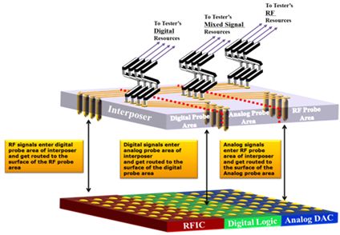
Figure 14: Interposers can be used to reroute signals of a given type to predetermined probe card location where a tester resource assignment conversion is observed. This methodology eliminates the requirement to rearrange tester resource assignment on the probe card by way of the use of another probe card during production test
Because the use of the interposer allows routing of signals to the locations of dedicated probes, could we conclude that issue is solved.
But designers may not assign next layer TSV locations at the same location as the interposer probe locations. This means that the interposer must perform two purposes: 1) to route signals to the location of dedicated probes and 2) to route signals to the location of the next layers input/output TSVs. Therefore the interposer design mentioned in Fig. 14 must change to resemble that of Fig. 15.
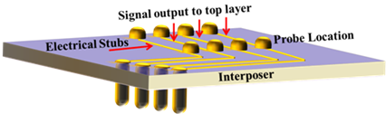
Figure 15: Interposer traces which contain probe card pads whose location is different than the signal output/inputs introduce reflection stubs
Here the input and outputs of the interposer are located differently than that of the probe points. Placing the probe points on signal traces as suggested creates new but tractable problems. The first is that, if left exposed, the probe points might contact TSVs on the layer above it. There might be any number of solutions to this problem, for instance, by locating the probe points in inert locations of the next stack layer.
The next problem is that of reflective stub introduced by the trace path stubs to the exiting TSV. These stubs can create reflections which could corrupt the signal integrity at the probe point. This can be solved based on knowledge of the frequency of the signals being probed. Given that the stubs are expected to be very short, (less than 3 mm) and that typical RF transmission frequencies (the highest expected in such an application) are approximately 5GHz, if the dielectric constant (Er) of the interposer where chosen to be as low as possible, interference from such reflections can be considered negligible. The same can be said for high speed digital signals except that their susceptibility to reflective perturbations is far less because of the greater noise margin inherent in digital signals.
3D, Through Silicon Vias (TSVs) and Precision Parametric Testing
The benefits of "die stacking" into 3D structures are higher reliability, lower power consumption and higher speed performance. This stacking will require individual die being very reliable and have very high test yield. Ideally, a single manufacturer would have complete control over each die’s electrical quality, performance, and physical construction. This would ensure that stacking would have a very high probability of a fully functional product.
However, in reality, it is unlikely a single company would manufacture all die layers required to make a complete 3D system product. Several manufacturers are expected to fabricate all of the different layers. If a die is added to the 3D stack which does not meet the stringent performance requirements, a non-function 3D product would result. Worse would be a reliability failure in the field of the finished product. This would result in recalls and lost revenues.
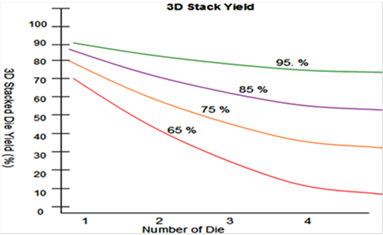
Figure 16: 3D stack die yield as a function of number of die in stack
As TSVs pass through a die they could pass by critical active areas and cause undesirable effects in performance. It will be important that all signal routings using TSVs be well planned and understood across all vendor designs in 3D systems.
TSVs will also create new device leakage and dielectric paths. Resistance and capacitive paths created by these TSVs will have to be monitored and understood. Thousands of new TSV are to be added as each new layer is added to the stack. Each such path could affect the stack performance and power consumption. Hence signal and power paths will require high accuracy testing. Engineers must be able to measure low leakage current levels in order detect possible defects before a new die is added to the stack. The same will hold for total system leakage after the stack has been assembled.
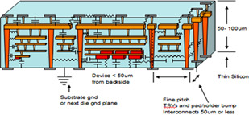
Figure 17: 3D TSV process capacitance, resistance, and leakage paths
Having precision measuring ability early in the manufacturing process is a requirement as device process teams will monitor TSV diameter, height and oxide thicknesses as a function of signal and power paths. Checking thousands of TSVs or just a sampling of critical ones will prove nontrivial.
Hence parametric testing will be required during the evaluation of individual die and during the die stack up phase. Quality precision parametric measurements of the TSVs, bumps, both C4 and micro C4 is key to successful 3D manufacturing. Today’s testers provide some precision parametric testing capability on a limited amount of pins. Using this solution is unacceptable as it would lead to a two pass test strategy unless a highly accuracy parametric parallel test solution is available.
A highly parallel test solution would provide the ability to measure nano-Ampere (nA) or pico-Ampere (pA) accuracy and accurate resistance measurements in the milli-ohm ranges across many pins in parallel. Advantest’s precision, highly parallel DC test solution provides a solution. The Advantest pico-Ampere option provides 100 pins of precision nA and pA current measurement ability in true parallel fashion.
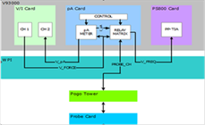
Figure18: Block diagram of a single channel of the Advantest 93000 pA tester
Fig. 18 is a block diagram of a single pin’s architecture of the 100 pin Advantest highly parallel precision parametric measurement system. Each of the 100 pins is identical and can be independently programmed on a per pin basis. One pass testing of digital data, standard PPMU, and precision PA parametric provides true one pass testing at wafer sort.
Micro Electro Mechanical System (MEMS) Probes
If 3D devices become more prevalent, wafer probes and probing techniques need to be re-evaluated. Thinned devices used in 3D stacking will need to be thoroughly tested to ensure high reliability before they can be used in a system level device. These thinned cannot withstand the force and pressure exerted by conventional probes. This force and pressure is magnified as device pitch and technologies shrink and densities increase. Conventional probes can cause damage by destroying devices at wafer level or worse by physically overstressing a die or TSV structure. This overstressed die can cause a failure of the 3D stack device over time. Probe contact planarity across a TSV arrays is essential for uniform contact resistance.
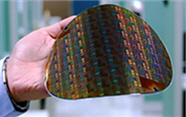
Figure 19: Wafer Thinned to 50um
Conventional metal MEMS probes can use vast areas of space (millimeters of length) in their construction to achieve compliance. These construction techniques will limit their use because of pitch and required higher densities which may cause probe misalignment.
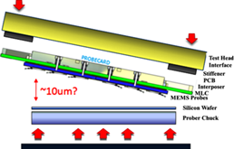
Figure 20: Probe planarity problems
Advantest’s MEMs probe solution addresses many of these problems. Using multi-level metal MEMS processing, microlithography and through-mold electro-deposition techniques, Advantest creates MEMs probes whose electrical and mechanical characteristics more closely match that required by these challenges. Shown below in Fig. 21 is a completed Advantest MEMS probe photo.
This fabrication process allows for high levels of consistent planarity from tip to tip as well as across the complete MEMS probes structure. Utilizing these techniques Advantest MEMS probes can be consistently fabricated to exacting standards. This tip to tip planarity process translates into much better compliance and less overdrive stress on thinned wafers. Another benefit of this is consistent path contact resistance as deflection is consistent across the probe array.
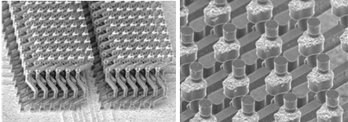
Figure 21: Scanning Electron Microscope (SEM) image of probe array showing high level of view of fabricated probe and sub-micron tip to tip planarity
Conclusion
Although the number of 3DIC TSV devices in production around the world is very small, if it were to ramp suddenly, test engineers might find themselves without knowledge of available solutions. What has been described are the features of Advantest’s V93000 and how they might address many of the 3DIC TSV test challenges as viewed from the perspective of system experts.
We have described how, using the currently available and mature features of the Advantest 93000 test system, the problems associated with software revision control, multiple clock domains, multiport and concurrent test usage are provided by this tester platform. Use of the Pico Ampere Meter to thoroughly test interposers may be a requirement because they cannot be tested fully once assembled on the stack. The use of interposers as described will eliminate the necessity of swapping probe cards during production as stack layers are assembled, because spatial translation of layer signals to the appropriate tester resource is achieved. Also utilizing MEMS probe designs will allow testing of thinned wafers with minimal pressure allowing test of structures more consistently and more repeatedly. This will translate into higher and more consistent wafer and die yields.
References
[1] Image obtained from: MEMS Journal: http://www.MEMSjournal.com/2010/04/overview-of-tsv-process-options.html